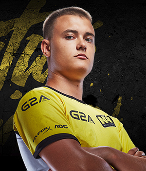

Возраст: 21Денис отправился в киберспортивный путь давным-давно. Первыми его командами, еще в Counter-Strike 1.6, были fbgaming, USSR и place2play. Кроме того, он, как и Кibaken, является активным участником московской кибертусовки. Много раз участвовал в турнирах в разнообразных миксах, где оттачивал свои навыки и соло-игрока, и координатора. Вместе с USSR дошел до четвертьфинала MSi Beat it! Russia 2011, выигрывал Techlabs Cup Ukraine вместе с place2play, а на последнем LAN-турнире по CS 1.6, ASUS Final Battle of the year, Денис и его 12.12.12 дошли до полуфинала.
Когда подыскивались претенденты на два вакантных места, кандидатура seized'а даже не обсуждалась. Ранее Денис частенько страховал команду, выступая в рамках онлайн-лиг в качестве замены Маркелову. Во многом именно Костин повлиял на выбор команды взять в состав Kibaken'а, с которым был уже давно знаком. В команде с недавних пор стал капитаном. Как игрок универсален, может в любую секунду взять AWP и исполнить роль второго снайпера, чем часто и занимается. Основная его задача - правильно скоординировать команду и не оплошать самому. Во всех командах, где он ранее играл, всегда исполнял именно командирскую роль, а потому опыта у него в этом хоть отбавляй.
Напарники по команде удивляются той целеустремленности и уверенности, с которой Денис идет к поставленным целям. Определенно талантлив и перспективен. Свободное от игры время любит проводить в компании друзей за интересным фильмом. В детстве серьезно занимался волейболом и даже выиграл первенство России в своей возрастной категории.
SSD: HyperX Savage SSD 240 GB
Память: HyperX Savage DDR4 GB
USB: HyperX FURY64 GB
Монитор: AOC g2460Pqu